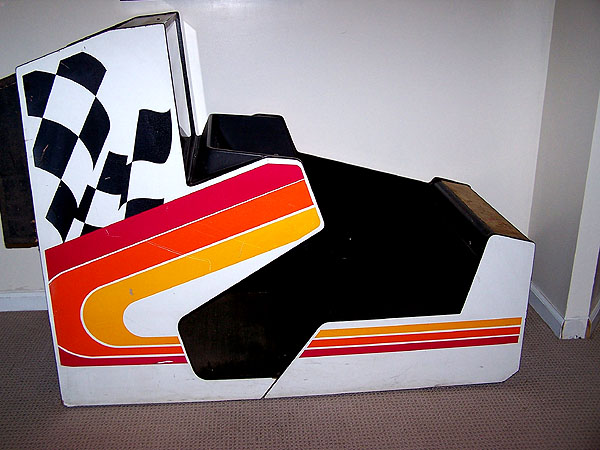
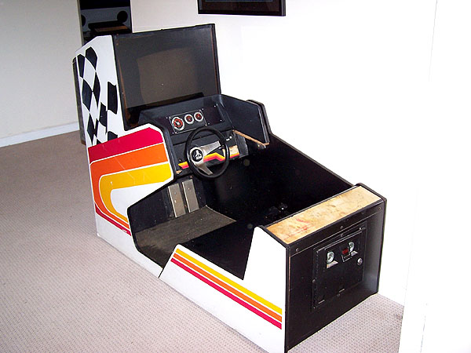

|
Greeting fellow Atari enthusiasts... Well, after 4 long years and over 3,000 miles of travel. At long last a new special edition to the Atari Museum has arrived. The original Pole Position Prototype Cockpit Game 

Special thanks to: Paul Mancuso of Atari Games Corp Sellam Ismail of VintageTech and Will Donzelli from classic computer list
Regards, Curt.
|